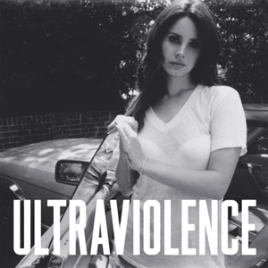
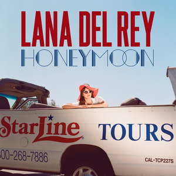
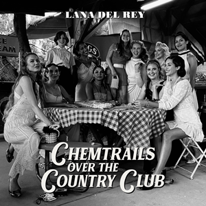
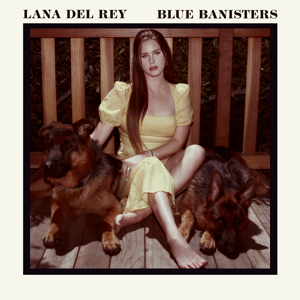

Album Reviews

Rating: 9/10
Cinematic, dramatic, and emotionally intense. This album defined Lana’s identity and introduced her signature themes of love, fame, and melancholy.
This album is what got me hooked. I absolutely adore the popular songs, "Born to Die", "Blue Jeans", "Video Games", "National Anthem", "Radio", and "Summertime Sadness", as most of the mainstream music listening community does. I think this album might be her most publicly loved album with so many chart-topping hits it's hard to fathom.
I also found love for "Million Dollar Man", "Lucky Ones", "Without You", and "Diet Mountain Dew" after diving deeper, though they are so different in tone. It definitely took me a little more time to get into the style of these songs, but now I can't imagine not liking them!
I personally think that "Lolita", "Off To The Races", "This Is What Makes Us Girls", and "Carmen" are a little out of my style, hence the slightly lowered score, but I'll still give them a listen every once and a while!
Overall, I think this is my second favorite album of Lana's, but it is such a close call to make.
Rating: 9/10
Darker and more rock-inspired, this album leans into raw emotion and stripped-back production.
This album is much moodier, definitely not the same dream-land mood you are in when you listen to Born To Die, but I absolutely love this side of Lana. Her voice quality really shines with these long, sad, reminiscent songs.
My personal favorites here are "Cruel World", "Shades of Cool", "Brooklyn Baby", "West Coast", "Black Beauty", and "Florida Kilos". Again, lots of really great popular songs that still struck a cord with mainstream audiences.
I really don't have many songs that I would skip here, they're all a similar vibe, perfect when you're in the mood. When I got into this album, this is where I started to learn that she loves to cover very old songs from the 1900s, like "The Other Woman" and I just find that fascinating. I love that she is giving these songs a new life and pushing them to a younger generation that definitely has the same feelings, maybe just in a new context.

Rating: 8.5/10
Dreamy, cinematic, and slow-burning. A very atmospheric and aesthetic-focused project.
Rating: 8.5/10
A brighter, more collaborative album that mixes Lana’s classic sadness with moments of hope.
Rating: 10/10
Lana at her lyrical peak—mature, introspective, and beautifully written.
Rating: 8/10
Soft, introspective, and more minimal—focused on identity and personal reflection.
Rating: 8.5/10
Very personal and stripped down, focusing on storytelling and emotional honesty.
Rating: 9/10
Deeply vulnerable, poetic, and experimental—one of her most complex works.